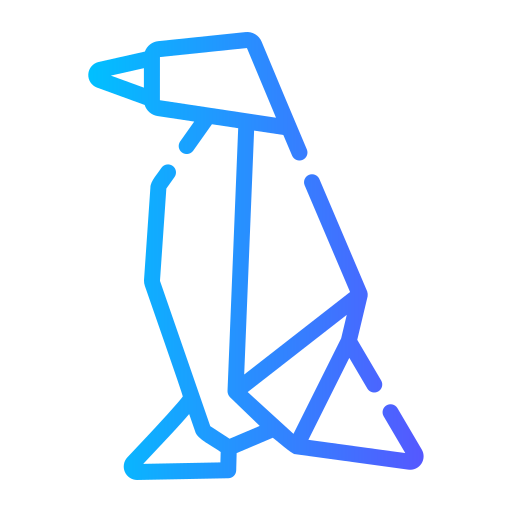

Licenciatura
en
Administracion de Areas
Naturales

Lic. en Administracion de Areas
Naturales
Presenciar Pto.Madryn
Duracion 5 años
Tec.Univ. Guardaparques
Presencial Pto.Madryn
Duracion 3 años.

Contactar